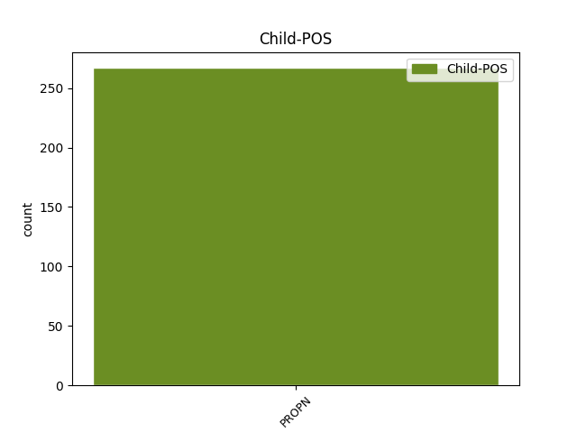

Distribution of features within this leaf

Agreement Rules sorted by frequency.
- When the dependent token is the flat multiword expression(flat@name) of the head token, and the dependent token is PROPN.
1 ansts _ _ _ _ 0 _ _ _
2 jah _ _ _ _ 0 _ _ _
3 gawairþi _ _ _ _ 0 _ _ _
4 fram _ _ _ _ 0 _ _ _
5 guda _ _ _ _ 0 _ _ _
6 attin _ _ _ _ 0 _ _ _
7 jah _ _ _ _ 0 _ _ _
8 Xristau Xristus PROPN Ne Case=Dat|Gender=Masc|Number=Sing 0 _ _ _
9 Iesu Iesus PROPN Ne Case=Dat|Gender=Masc|Number=Sing 8 flat@name _ ref=TIT_1.4
10 nasjand _ _ _ _ 0 _ _ _
11 unsaramma _ _ _ _ 0 _ _ _
1 ansts _ _ _ _ 0 _ _ _
2 jah _ _ _ _ 0 _ _ _
3 gawairþi _ _ _ _ 0 _ _ _
4 fram _ _ _ _ 0 _ _ _
5 guda guþ NOUN Nb Case=Dat|Gender=Masc|Number=Sing 0 _ _ _
6 attin _ _ _ _ 0 _ _ _
7 jah _ _ _ _ 0 _ _ _
8 Xristau Xristus PROPN Ne Case=Dat|Gender=Masc|Number=Sing 5 conj _ ref=TIT_1.4
9 Iesu _ _ _ _ 0 _ _ _
10 nasjand _ _ _ _ 0 _ _ _
11 unsaramma _ _ _ _ 0 _ _ _
1 Weitwodja _ _ _ _ 0 _ _ _
2 in _ _ _ _ 0 _ _ _
3 andwairþja _ _ _ _ 0 _ _ _
4 gudis _ _ _ _ 0 _ _ _
5 jah _ _ _ _ 0 _ _ _
6 fraujins frauja NOUN Nb Case=Gen|Gender=Masc|Number=Sing 0 _ _ _
7 Xristaus Xristus PROPN Ne Case=Gen|Gender=Masc|Number=Sing 6 appos _ ref=2TIM_4.1
8 Iesuis _ _ _ _ 0 _ _ _
9 saei _ _ _ _ 0 _ _ _
10 skal _ _ _ _ 0 _ _ _
11 stojan _ _ _ _ 0 _ _ _
12 qiwans _ _ _ _ 0 _ _ _
13 jah _ _ _ _ 0 _ _ _
14 dauþans _ _ _ _ 0 _ _ _
15 bi _ _ _ _ 0 _ _ _
16 qum _ _ _ _ 0 _ _ _
17 is _ _ _ _ 0 _ _ _
18 jah _ _ _ _ 0 _ _ _
19 þiudinassu _ _ _ _ 0 _ _ _
20 is _ _ _ _ 0 _ _ _
1 Kretes Kretes PROPN Ne Case=Nom|Gender=Masc|Number=Plur 3 subj _ ref=TIT_1.12
2 sinteino _ _ _ _ 0 _ _ _
3 liugnjans liugnja NOUN Nb Case=Nom|Gender=Masc|Number=Plur 0 _ _ _
4 ubila _ _ _ _ 0 _ _ _
5 unbiarja _ _ _ _ 0 _ _ _
6 wambos _ _ _ _ 0 _ _ _
7 latos _ _ _ _ 0 _ _ _
1 manna _ _ _ _ 0 _ _ _
2 haitans haitan VERB V- Aspect=Perf|Case=Nom|Gender=Masc|Number=Sing|Strength=Strong|Tense=Past|VerbForm=Part|Voice=Pass 0 _ _ _
3 Iesus Iesus PROPN Ne Case=Nom|Gender=Masc|Number=Sing 2 comp:pred _ ref=JOHN_9.11
4 fani _ _ _ _ 0 _ _ _
5 gawaurhta _ _ _ _ 0 _ _ _
6 jah _ _ _ _ 0 _ _ _
7 bismait _ _ _ _ 0 _ _ _
8 mis _ _ _ _ 0 _ _ _
9 augona _ _ _ _ 0 _ _ _
10 jah _ _ _ _ 0 _ _ _
11 qaþ _ _ _ _ 0 _ _ _
12 mis _ _ _ _ 0 _ _ _
1 jah _ _ _ _ 0 _ _ _
2 sai _ _ _ _ 0 _ _ _
3 Aileisabaiþ Aileisabaiþ PROPN Ne Case=Nom|Gender=Fem|Number=Sing 8 dislocated _ ref=LUKE_1.36
4 niþjo _ _ _ _ 0 _ _ _
5 þeina _ _ _ _ 0 _ _ _
6 jah _ _ _ _ 0 _ _ _
7 so _ _ _ _ 0 _ _ _
8 inkilþo inkilþo NOUN Nb Case=Nom|Gender=Fem|Number=Sing 0 _ _ _
9 sunau _ _ _ _ 0 _ _ _
10 in _ _ _ _ 0 _ _ _
11 aldomin _ _ _ _ 0 _ _ _
12 seinamma _ _ _ _ 0 _ _ _
13 jah _ _ _ _ 0 _ _ _
14 sa _ _ _ _ 0 _ _ _
15 menoþs _ _ _ _ 0 _ _ _
16 saihsta _ _ _ _ 0 _ _ _
17 ist _ _ _ _ 0 _ _ _
18 izai _ _ _ _ 0 _ _ _
19 sei _ _ _ _ 0 _ _ _
20 haitada _ _ _ _ 0 _ _ _
21 stairo _ _ _ _ 0 _ _ _
22 unte _ _ _ _ 0 _ _ _
23 nist _ _ _ _ 0 _ _ _
24 unmahteig _ _ _ _ 0 _ _ _
25 guda _ _ _ _ 0 _ _ _
26 ainhun _ _ _ _ 0 _ _ _
27 waurde _ _ _ _ 0 _ _ _
1 warþ _ _ _ _ 0 _ _ _
2 þan _ _ _ _ 0 _ _ _
3 biþe _ _ _ _ 0 _ _ _
4 daupida _ _ _ _ 0 _ _ _
5 alla _ _ _ _ 0 _ _ _
6 managein _ _ _ _ 0 _ _ _
7 jah _ _ _ _ 0 _ _ _
8 at _ _ _ _ 0 _ _ _
9 Iesu Iesus PROPN Ne Case=Dat|Gender=Masc|Number=Sing 10 subj@pass _ ref=LUKE_3.21
10 ufdaupidamma uf-daupjan VERB V- Aspect=Perf|Case=Dat|Gender=Masc|Number=Sing|Strength=Strong|Tense=Past|VerbForm=Part|Voice=Pass 0 _ _ _
11 jah _ _ _ _ 0 _ _ _
12 bidjandin _ _ _ _ 0 _ _ _
13 usluknoda _ _ _ _ 0 _ _ _
14 himins _ _ _ _ 0 _ _ _
15 jah _ _ _ _ 0 _ _ _
16 atiddja _ _ _ _ 0 _ _ _
17 ahma _ _ _ _ 0 _ _ _
18 sa _ _ _ _ 0 _ _ _
19 weiha _ _ _ _ 0 _ _ _
20 leikis _ _ _ _ 0 _ _ _
21 siunai _ _ _ _ 0 _ _ _
22 swe _ _ _ _ 0 _ _ _
23 ahaks _ _ _ _ 0 _ _ _
24 ana _ _ _ _ 0 _ _ _
25 ina _ _ _ _ 0 _ _ _
26 jah _ _ _ _ 0 _ _ _
27 stibna _ _ _ _ 0 _ _ _
28 us _ _ _ _ 0 _ _ _
29 himina _ _ _ _ 0 _ _ _
30 warþ _ _ _ _ 0 _ _ _
31 qiþandei _ _ _ _ 0 _ _ _
Disagree Examples:
1 jah _ _ _ _ 0 _ _ _
2 gasatida _ _ _ _ 0 _ _ _
3 Seimona _ _ _ _ 0 _ _ _
4 namo namo NOUN Nb Case=Acc|Gender=Neut|Number=Sing 0 _ _ _
5 Paitrus Paitrus PROPN Ne Case=Nom|Gender=Masc|Number=Sing 4 appos _ ref=MARK_3.16
1 rabbei _ _ _ _ 0 _ _ _
2 goþ _ _ _ _ 0 _ _ _
3 ist _ _ _ _ 0 _ _ _
4 unsis _ _ _ _ 0 _ _ _
5 her _ _ _ _ 0 _ _ _
6 wisan _ _ _ _ 0 _ _ _
7 jah _ _ _ _ 0 _ _ _
8 gawaurkjam _ _ _ _ 0 _ _ _
9 hlijans _ _ _ _ 0 _ _ _
10 þrins _ _ _ _ 0 _ _ _
11 þus _ _ _ _ 0 _ _ _
12 ainana _ _ _ _ 0 _ _ _
13 jah _ _ _ _ 0 _ _ _
14 Mose Moses PROPN Ne Case=Dat|Gender=Masc|Number=Sing 15 orphan _ ref=MARK_9.5
15 ainana ains NUM Ma Case=Acc|Gender=Masc|Number=Sing 0 _ _ _
16 jah _ _ _ _ 0 _ _ _
17 ainana _ _ _ _ 0 _ _ _
18 Helijin _ _ _ _ 0 _ _ _
1 rabbei _ _ _ _ 0 _ _ _
2 goþ _ _ _ _ 0 _ _ _
3 ist _ _ _ _ 0 _ _ _
4 unsis _ _ _ _ 0 _ _ _
5 her _ _ _ _ 0 _ _ _
6 wisan _ _ _ _ 0 _ _ _
7 jah _ _ _ _ 0 _ _ _
8 gawaurkjam _ _ _ _ 0 _ _ _
9 hlijans _ _ _ _ 0 _ _ _
10 þrins _ _ _ _ 0 _ _ _
11 þus _ _ _ _ 0 _ _ _
12 ainana _ _ _ _ 0 _ _ _
13 jah _ _ _ _ 0 _ _ _
14 Mose _ _ _ _ 0 _ _ _
15 ainana _ _ _ _ 0 _ _ _
16 jah _ _ _ _ 0 _ _ _
17 ainana ains NUM Ma Case=Acc|Gender=Masc|Number=Sing 0 _ _ _
18 Helijin Helias PROPN Ne Case=Dat|Gender=Masc|Number=Sing 17 orphan _ ref=MARK_9.5
1 aþþan _ _ _ _ 0 _ _ _
2 fagino _ _ _ _ 0 _ _ _
3 in _ _ _ _ 0 _ _ _
4 qumis _ _ _ _ 0 _ _ _
5 Staifanaus Staifanus PROPN Ne Case=Nom|Gender=Masc|Number=Sing 0 _ _ _
6 jah _ _ _ _ 0 _ _ _
7 Faurtunataus Faurtunatus PROPN Ne Case=Gen|Gender=Masc|Number=Sing 5 conj _ ref=1COR_16.17
8 jah _ _ _ _ 0 _ _ _
9 Akaïkaus _ _ _ _ 0 _ _ _
10 unte _ _ _ _ 0 _ _ _
11 izwarana _ _ _ _ 0 _ _ _
12 waninassu _ _ _ _ 0 _ _ _
13 þai _ _ _ _ 0 _ _ _
14 usfullidedun _ _ _ _ 0 _ _ _
1 goleins _ _ _ _ 0 _ _ _
2 meinai meins ADJ Ps Case=Dat|Gender=Fem|Number=Sing|Person=1|Poss=Yes 0 _ _ _
3 handau _ _ _ _ 0 _ _ _
4 Pawlus Pawlus PROPN Ne Case=Gen|Gender=Masc|Number=Sing 2 appos _ ref=1COR_16.21